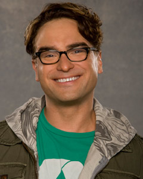
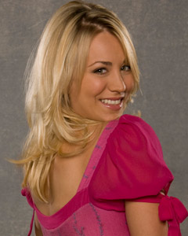
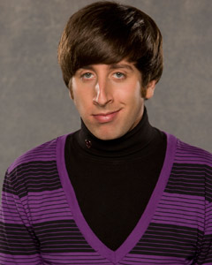
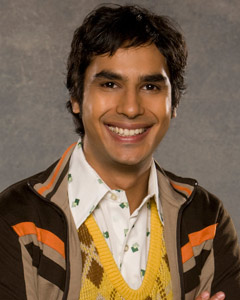
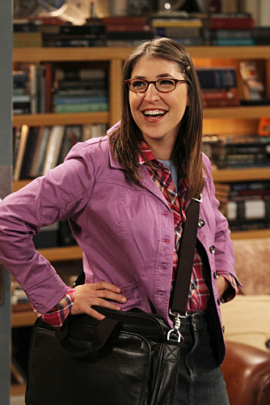
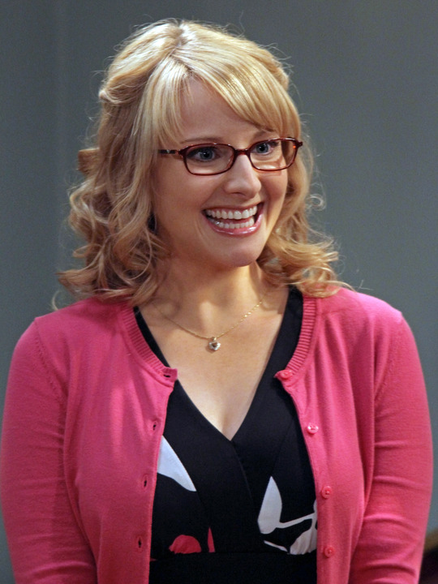

El Dr. Leonard Leakey Hofstadter (Leonard Simeon Hofstadter en la versión española de la serie) es un personaje de ficción de la serie estadounidense The Big Bang Theory, interpretado por Johnny Galecki.
Obtiene su doctorado a los 24 años de edad. Si bien es mucho más sociable que Sheldon, al igual que Rajesh y Howard, nunca ha tenido gran éxito con las mujeres, pese a que de los cuatro es el único que ha tenido varias novias estables a lo largo de los capítulos de la serie, entre ellas la némesis de Sheldon: Leslie Winkle. Sus amigos lo fastidiaban diciéndole que moriria solo como ellos, pero él no se rindió y siempre trató de conquistar a su vecina Penny, de la cual recibía ambiguas respuestas hasta que finalmente inician una relación en inicio de la tercera temporada terminandola al final de esta; después la iniciaron nuevamente a mediados de la quinta temporada. Su mejor amigo es Sheldon, ya que aceptó vivir junto a él y esto se debió a que en una ocasión le salvó la vida en el ascensor del edificio donde viven. Le apasionan los cómics y los videojuegos. Además es intolerante a la lactosa y padece miopía.
Leonard trabaja como físico experimental en el California Institute of Technology, tiene un CI de 173 y comparte apartamento con Sheldon Cooper. Es hijo de una fría neuróloga y psiquiatra (quien se lleva muy bien con Sheldon, ya que tienen la misma personalidad) y de un antropólogo. Se encuentra enamorado de su vecina Penny. Si bien Leonard siente cierta vergüenza de sus conductas nerds (como jugar Klingon Boggle) muchas de sus actividades pueden considerarse estereotípicas de nerd; como su afición por los comics, la ciencia ficción y las figuras de acción. A pesar de esto, Leonard es mucho menos socialmente retraído que sus amigos Howard Wolowitz, Rajesh Ramayan Koothrappali y Sheldon Cooper.
De los 4 amigos científicos es el que ha sostenido relaciones de pareja con varias mujeres, incluyendo a una joven espía encubierta de origen norcoreano llamada Joyce Kim, a la también científica y compañera Leslie Winkle, con la Dra. Stephanie Barnett (interpretada por Sara Rue), con Penny con quien se convierte en novio formal en la tercera temporada, terminan en el episodio "The Wheaton Recurrency" (3x19) y finalmente con Priya Koothrappali, quien se transforma en su novia en la cuarta y principios de la quinta temporada (5x07 "The Good Guy Fluctuation"), pero queda implícito que rompieron ya que Leonard en un episodio menciona que está soltero. En un episodio retoma su relación con Penny, aunque de manera lenta.

Su personalidad es difícil y está fuertemente caracterizada por la egolatría que le hace considerarse intelectualmente superior a todo ser que le rodea, de ese modo subestima a los ingenieros como "los Oompa Loompa de la ciencia"6 (en referencia a los obreros enanos de Willy Wonka), afirmando que la ingeniería "es la hermana menor retrasada de la física" y da por supuesto que ganará el Premio Nobel. Pese a su gran inteligencia, tiene serios problemas con tareas sencillas que se niega a reconocer, por ejemplo el ejercicio físico o el conducir un vehículo. Considera a Leonard, Penny y Rajesh sus tres mejores amigos mientras a Howard lo considera solamente "un conocido estimado" 7
Se ha llegado a considerar que Sheldon Cooper padece síndrome de Asperger lo que explicaría su intolerancia a sonidos agudos o inesperados; las compulsiones como tocar tres veces la puerta y decir el nombre de la persona que está dentro y esto a su vez hacerlo tres veces; sus estrictas rutinas diarias, dificultad para socializar y aparente indiferencia emocional por los demás; así como la interpretación literal del lenguaje que le dificulta entender bromas, doble sentido, o sarcasmo8 aún cuando él mismo en ocasiones pronuncia frases sarcásticas en las cuales aclara que "está siendo sarcástico", no demuestra atracción sexual por hombres o mujeres, por lo que podría ser asexual, aunque él mismo aclaró que encontraba la relaciones sexuales increíblemente antihigiénicas por lo que su hipocondría también podría ser un factor determinante de su inexistente interés por las relaciones sexuales o personales. Sin embargo, los creadores dicen simplemente que "él es así". Sus amigos creen (a modo de broma) que probablemente se reproduce por mitosis, que algún día se comerá una gran cantidad de comida tailandesa y se dividirá en dos Sheldons (teoría de Howard) o que es la larva de su especie, que se convertirá en un capullo y saldrá como un Sheldon con exoesqueleto y alas (teoría de Leonard). Tiene, sin embargo, una gran admiración por la madre de Leonard (neuróloga y psiquiatra), a la que considera brillante en el área de las neurociencias y la actitud racional-científica, además de ser la única persona con la que se encuentra completamente cómodo, y la única mujer (exceptuando a Amy Farrah Fowler) con quien se ha besado (cabe señalar que ambas estaban ebrias y lo hicieron por sorpresa). Después de hacer una broma dice "¡Bazinga!" ("Vacilón" en un principio, posteriormente dice la palabra original "¡Bazinga!" en Hispanoamérica y "Zas en toda la boca" en España).
Rige su vida con programación de hábitos y horas, como dedicar una noche de la semana a cada tarea o afición, semana tras semana e igualmente con la cena o siempre ir al baño de 7:00 a 7:20 por las mañanas. Suele comer comida asiática en especial la comida tailandesa, aunque a veces prefiere las hamburguesas de Big Boy.
En el primer capítulo de la primera temporada revela que es de Omaha (Nebraska). Penny es una eterna aspirante a actriz, que mientras tanto trabaja como camarera en un restaurante llamado “The Cheesecake Factory”, al que acuden regularmente los cuatro protagonistas masculinos de la serie. Es sagitario, por lo que nació entre el 22 de noviembre y el 21 de diciembre. Aunque, según la lógica del truco de magia de Wolowitz, en el episodio The prestidigitation Approximation se podría inferir que pudo haber nacido el 2 de diciembre.2
En contraste al resto del grupo, Penny ni es particularmente inteligente ni sabe mucho sobre ciencia, pero tiene unas grandes dotes sociales y mucho conocimiento sobre cultura pop.3
Penny es desordenada y desorganizada, pero al parecer le gusta vivir de ese modo.4 Tiene mucha confianza en los horóscopos y discute varias veces con Leonard y Sheldon sobre su precisión.5 2
Penny es una chica a la que le encantan las fiestas. También tiene un carácter chino tatuado en su glúteo derecho. Según ella significa “coraje” (del chino 勇) mientras que según Sheldon significa “sopa” (chino simplificado: 汤, chino tradicional 湯). Suele usar aceite de vainilla como perfume y tiende a roncar (especialmente cuando duerme de espaldas). Pese a que dice ser vegetariana, sus hábitos alimenticios a lo largo de la serie muestran que no lo es. Es probable que diga que es vegetariana porque está de moda entre las actrices jóvenes.
Desde el momento en que Penny llegó, Leonard se sintió muy atraído hacia ella, sin embargo no sucedió nada, hasta el ultimo capítulo de la primera temporada, cuando Penny termina con su novio y Leonard recoge el valor para invitarla a salir, pero esto no dura nada ya que terminan por que Penny no era científica como Leonard y eso causaba problemas entre ellos.
A finales de la segunda temporada en el capítulo de the monopolar expedition, a los cuatro amigos les sale la gran oportunidad de viajar al Polo Norte, por cosas del trabajo, Penny se pone muy triste con la ida de su vecino Leonard. Cuando llegan de su viaje, la primera reacción de Penny fue besar a Leonard; donde se hacen novios y terminan por un apresurado te amo de parte de nuestro científico.

Es judío con apariencia anticuada para su época: siempre viste ropa ajustada y psicodélica con un peinado tipo Beatle, además es alérgico a los cacahuetes (maníes). Su mejor amigo es Raj y hasta la sexta temporada aún vivía con su madre, aunque él siempre afirmaba "mi madre vive conmigo". Cree que todas las mujeres se sienten atraídas por él, pero la realidad no puede ser más distinta. Es un poco pervertido. Además de lo anterior, es el único de los cuatro amigos que no tiene un doctorado (sólo tiene un máster), lo cual desata las burlas de Sheldon. Hasta la tercera temporada intentó inútilmente ligar con Penny o cualquier otra mujer bonita, mediante piropos, trucos de magia o insinuaciones subidas de tono, lo cual hacía que ellas sientan bastante repulsión por él. No obstante, con Penny se ha llevado bien como amigos, se han servido de ayuda mutuamente; por ejemplo, cuando Penny le pidió a Howard que mantuviese a Leonard alejado de su piso para prepararle una fiesta, o cuando llevaron juntos a Sheldon al departamento de tráfico. Mantuvo con Leslie Winkle una relación basada en el sexo en la segunda temporada, pero ella le abandonó. En la tercera temporada, conoce a una compañera de Penny llamada Bernadette, con quien parecía que lo único que tenían en común era el odio hacia sus respectivas madres. Esta relación terminó al final de la tercera temporada, aunque se dan una oportunidad al principio de la cuarta temporada. Al final de la cuarta temporada se comprometen, casándose finalmente en el último y memorable capítulo de la Temporada 5, y apartir de la sexta temporada deciden vivir juntos.
Howard no tiene ningún problema con admitir que es nerd. Aunque acosa a Penny, no le importa que ella vea cuando él y sus amigos están haciendo cosas de geeks, a diferencia de Leonard a quien parece avergonzar que los demás vean la clase de cosas que hace con sus amigos para divertirse. Por lo general está tratando de conseguir mujeres, no le importa de qué raza, altura o tipo de cabello tenga su "futura conquista", sólo le interesa que sea atractiva. Sin embargo nunca logra conseguir nada con alguna mujer, en parte por su estilo completamente pasado de moda (ya que viste como si viviera en los años 60) y en parte también porque piensa que la mejor manera de conquistar a una dama es insultarla y hacerle notar que a pesar de sus defectos, es atractiva. Su plan jamás da resultado. En la tercera temporada se descubre que perdió la virginidad con su prima segunda en el funeral de su tío.
Lo único que parece acomplejar a Howard es el hecho de ser un adulto que aún vive con su madre. Le avergüenza tener que decirlo y siempre insiste en que su madre vive con él y no al revés. Cuando solicita comidas con sus compañeros come platos asiáticos con ingredientes no-kosher, lo que le produce un extraño placer.
Trabajo como científico[editar · editar código]

"Raj" como lo conocen, es un astrofísico experto en partículas. Descubrió un nuevo planeta más allá del cinturón de Kuiper al que llamó "Planet Bollywood" (en alusión al Hollywood indio), lo que le valió aparecer en la revista People. Rajesh nació en India y frecuentemente se comunica con sus padres por Internet, quienes constantemente le inducen a que tenga relaciones con mujeres, pues sospechan que "Raj" es homosexual y que su pareja es Howard, situación que la misma serie ironiza; puesto que ambos en ocasiones tienen discusiones propias de un matrimonio en conflicto, han llegado a besarse (por accidente) y Raj se pone celoso cuando Howard da detalles sobre su vida sexual.
Este personaje representa el estereotipo de un hindú que reside en Estados Unidos. Su familia es muy rica y es quien menos problemas del grupo tendría si no fuera porque padecia un raro trastorno (mutismo selectivo) que le impidia hablar con las mujeres (o con hombres en apariencia afeminados), a excepción de su madre y su hermana; sólo se comunicaba con ellas si estába ebrio (o creeia estarlo) Tiene un abierto lado femenino, declarándose metrosexual y también destaca su repudio hacia la comida india. Se comunica con sus padres vía Skype, quienes le alienta a conocer y casarse con una mujer hindú, hasta que finalmente este acepta que le arreglen una cita pero termina siendo Lesbiana;igualmente, los padres han manifestado preocupación por la presunción que en algún momento les dirá que "salió del closet". Raj muchas veces habla sobre la pobreza de la India, situaciones en las que sus amigos le recuerdan su origen de familia acomodada. A veces se siente un poco discriminado por los demás, tanto por su origen indio como por su incapacidad de hablar con las mujeres.
Sufre de timidez patológica y es incapaz de hablar con mujeres por padecer mutismo selectivo (y según sus propias palabras, "tampoco con hombres afeminados") a menos que consuma alcohol (aunque con Penny es capaz de hablar algunas veces cuando desarrolla suficiente confianza, y con Priya porque es su hermana). No obstante ello, en una oportunidad consumió un medicamento en fase de prueba que le permitía controlar su timidez y hablar con las mujeres, aunque le producía espasmos musculares como efecto secundario. Sin embargo, cuando consume alcohol se vuelve un seductor nato, llegando a tener más éxito que Howard.

Amy Farrah Fowler es una neurocientífica que Raj y Howard encontraron para Sheldon a través de un servicio de citas por Internet (sin su conocimiento). Se parece más a Sheldon que cualquier otra persona. Al igual que este, había evitado tener anteriormente relaciones, y sólo participa en citas una vez al año cumpliendo con un acuerdo con su madre, gracias al cual puede utilizar la barbacoa de George Foreman.
Es interesante señalar que Amy es neurobióloga, como la madre de Leonard (con la que también tiene gran afinidad). Aunque es muy parecida a Sheldon, ella es más amable con la gente y es un poco más abierta en las relaciones sociales. Considera a Penny como su mejor amiga y la llama "bestie" ("Mejor amiga" en la versión española), y también es amiga de Bernadette, formando un trío de amigas. Ellas incluso lo nombran "El Grupo Anti-Priya" (cuando ésta estaba en pareja con Leonard) porque Penny dijo que la odiaba por haberle arrebatado a su hombre (Leonard). Ha besado a Sheldon una vez, solo que lo hizo por los efectos del alcohol.
Durante los cuatro meses de su relación (que tienen lugar fuera de la pantalla entre las temporadas 3 y 4), se comunicaban diariamente a través de mensajes de texto, correo electrónico y Twitter, pero nunca en persona. Sheldon y Amy han discutido tener un hijo como un "regalo a la humanidad", lo que les llevó a su primera cita real, a la que los llevó Penny. A pesar de ello, Sheldon no consideraba a Amy su novia. Ellos "rompieron" debido a un desacuerdo sobre la validez de sus respectivos campos, pero "regresaron" cuando Mary Cooper, la madre de Sheldon, hábilmente engañó a Sheldon expresando su apoyo a su decisión de ruptura (de tal modo que Sheldon tuviera el deseo natural de hacer lo contrario). A partir de entonces aparece regularmente citándose con Sheldon y los chicos, siendo capaz de sacar de quicio a todos tal y como lo haría Sheldon. A diferencia de Sheldon, a ella parece que le interesa tener sexo y a veces se insinúa incluso que es bisexual. Por ejemplo, cuando besa a Penny y declara que le gusta, o cuando le sugiere a Sheldon que se corte el cabello con Penny y dice: «De esta mujer yo me dejo tocar cualquier pelo de mi cuerpo». Además en una ocasión se siente inequívocamente atraída por un exnovio de Penny llamado Zack.
Desde el capítulo 10 de la quinta temporada, Sheldon y Amy deciden establecer en noviazgo.
Se sabe que durante su adolescencia fue marginada por el resto de sus compañeros. Su madre fue la única que le firmó el anuario, tampoco fue nunca invitada a una fiesta de pijamas. No fue al baile de graduación a pesar de que tenía a su primo como pareja, la madre de Amy le pagó a éste para que la acompañase, pero no fueron porque él se gastó el dinero en drogas. Una vez pasó un semestre estudiando en Noruega y sus compañeras la encerraron en una sauna con una nutria en celo. Desarrolla (y demuestra) una perturbadora atención rayana en la obsesión con Penny, ya que siempre le perdona todos los errores que comete y la sitúa en lo más alto de su pedestal de personas, lo cual produce situaciones bastante tragicómicas con ella, como en el episodio cuando le regala una pintura gigante de ellas dos.

La personalidad de Bernadette parece ser la de una persona tímida y afable, que por solo ver contento a Howard sonríe ante los constantes chistes y bromas que él hace, habitualmente sin entenderlos (por lo general son chistes malos y ahí está la gracia). Tiene conocimientos en física experimental, y se siente atraída por el trabajo de Leonard. En una ocasión, solo por lástima iba a dejar que Raj la besara (Raj dice que hace un año que no besa a una chica), pero en el momento del beso, Howard se interpone y es él el que recibe el beso, cosa que a ella le resultó divertido.
Penny invita a Bernadette a salir con Leonard y un amigo de este. En el principio de la cita, cuando van los cuatro en el auto, parece ser que ella y Howard no tienen nada en común: A ella no le gusta la ciencia ficción, los trucos de magia, los juegos de rol, ni los ordenadores. Pero cuando están en el restaurante ambos comienzan a quejarse de sus difíciles relaciones con sus madres. Es ahí donde comienza la relación, que se irá desarrollando a lo largo de la tercera temporada. Por lo general Bernadette no entiende ninguna de las bromas de Howard, pero solo por verlo contento se ríe de ellas. Al comienzo de la cuarta temporada se entiende que algo sucedió entre ellos, que dio lugar a un distanciamiento, pero en el capítulo 4 de la cuarta temporada sale a la luz cual fue el motivo de la separación cuando Howard le cuanta a Penny lo que sucedió: mientras estaba (Howard) teniendo sexo (ciber-sucio, como dice él) en el juego online World of Warcraft, con un personaje llamado Glissinda el Troll bajo el puente de las almas, Bernadette llega y presencia la escena, ante esto se va, y no se llamaron más. Penny interviene como mediadora entre Bernadette y Howard, y se dan una nueva oportunidad para arreglar sus diferencias, pero Bernadette deja en claro que la relación comienza de cero.
En el capítulo veinte de la cuarta temporada, todos asumen que ellos tienen problemas en la relación, pero finalmente ella acepta la propuesta de matrimonio de Howard, casandose con el en el final de la quinta temporada y deciden vivir juntos en la sexta.
